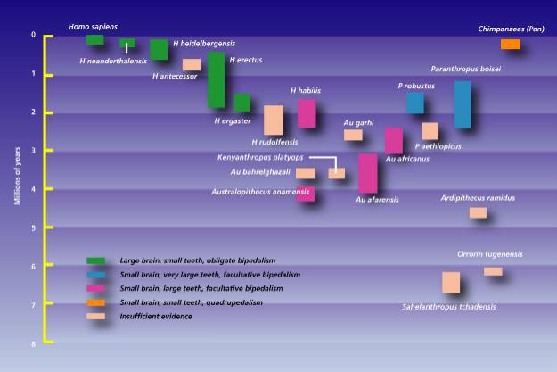

Hominid Species
Introduction
The word "hominid" in this website refers to members of the family of humans, Hominidae, which consists of all species on our side of the last common ancestor of humans and living apes. Hominids are included in the superfamily of all apes, the Hominoidea, the members of which are called hominoids. Although the hominid fossil record is far from complete, and the evidence is often fragmentary, there is enough to give a good outline of the evolutionary history of humans.
The time of the split between humans and living apes used to be thought to have occurred 15 to 20 million years ago, or even up to 30 or 40 million years ago. Some apes occurring within that time period, such as Ramapithecus, used to be considered as hominids, and possible ancestors of humans. Later fossil finds indicated that Ramapithecus was more closely related to the orang-utan, and new biochemical evidence indicated that the last common ancestor of hominids and apes occurred between 5 and 10 million years ago, and probably in the lower end of that range (Lewin 1987). Ramapithecus therefore is no longer considered a hominid.
The field of science which studies the human fossil record is known as paleoanthropology. It is the intersection of the disciplines of paleontology (the study of ancient lifeforms) and anthropology (the study of humans).
Hominid Species
The species here are listed roughly in order of appearance in the fossil record (note that this ordering is not meant to represent an evolutionary sequence), except that the robust australopithecines are kept together. Each name consists of a genus name (e.g. Australopithecus, Homo) which is always capitalized, and a specific name (e.g. africanus, erectus) which is always in lower case. Within the text, genus names are often omitted for brevity. Each species has a type specimen which was used to define it.
Sahelanthropus tchadensis
This species was named in July 2002 from fossils discovered in Chad in Central Africa (Brunet et al. 2002, Wood 2002). It is the oldest known hominid or near-hominid species, dated at between 6 and 7 million years old. This species is known from a nearly complete cranium nicknamed Toumai, and a number of fragmentary lower jaws and teeth. The skull has a very small brain size of approximately 350 cc. It is not known whether it was bipedal. S. tchadensis has many primitive apelike features, such as the small brainsize, along with others, such as the brow ridges and small canine teeth, which are characteristic of later hominids. This mixture, along with the fact that it comes from around the time when the hominids are thought to have diverged from chimpanzees, suggests it is close to the common ancestor of humans and chimpanzees.{kind=link}
Orrorin tugenensis
This species was named in July 2001 from fossils discovered in western Kenya (Senut et al. 2001). The fossils include fragmentary arm and thigh bones, lower jaws, and teeth and were discovered in deposits that are about 6 million years old. The limb bones are about 1.5 times larger than those of Lucy, and suggest that it was about the size of a female chimpanzee. Its finders have claimed that Orrorin was a human ancestor adapted to both bipedality and tree climbing, and that the australopithecines are an extinct offshoot. Given the fragmentary nature of the remains, other scientists have been skeptical of these claims so far (Aiello and Collard 2001). A later paper (Galik et al. 2004) has found further evidence of bipedality in the fossil femur.Ardipithecus ramidus
This species was named Australopithecus ramidus in September 1994 (White et al. 1994; Wood 1994) from some fragmentary fossils dated at 4.4 million years. A more complete skull and partial skeleton was discovered in late 1994 and based on that fossil, the species was reallocated to the genus Ardipithecus (White et al. 2005). This fossil was extremely fragile, and excavation, restoration and analysis of it took 15 years. It was published in October 2009, and given the nickname 'Ardi'. Ar. ramidus was about 120 cm (3'11") tall and weighed about 50 kg (110 lbs). The skull and brain are small, about the size of a chimpanzee. It was bipedal on the ground, though not as well adapted to bipedalism as the australopithecines were, and quadrupedal in the trees. It lived in a woodland environment with patches of forest, indicating that bipedalism did not originate in a savannah environment.
A number of fragmentary fossils discovered between 1997 and 2001, and dating from 5.2 to 5.8 million years old, were originally assigned to a new subspecies, Ardipithecus ramidus kadabba (Haile-Selassie 2001), and later to a new species, Ardipithecus kadabba (Haile-Selassie et al. 2004). One of these fossils is a toe bone belonging to a bipedal creature, but is a few hundred thousand years younger than the rest of the fossils and so its identification with kadabba is not as firm as the other fossils.
Australopithecus anamensis
This species was named in August 1995 (Leakey et al. 1995). The material consists of 9 fossils, mostly found in 1994, from Kanapoi in Kenya, and 12 fossils, mostly teeth found in 1988, from Allia Bay in Kenya (Leakey et al. 1995). Anamensis existed between 4.2 and 3.9 million years ago, and has a mixture of primitive features in the skull, and advanced features in the body. The teeth and jaws are very similar to those of older fossil apes. A partial tibia (the larger of the two lower leg bones) is strong evidence of bipedality, and a lower humerus (the upper arm bone) is extremely humanlike. Note that although the skull and skeletal bones are thought to be from the same species, this is not confirmed.
Australopithecus afarensis
A. afarensis existed between 3.9 and 3.0 million years ago. Afarensis had an apelike face with a low forehead, a bony ridge over the eyes, a flat nose, and no chin. They had protruding jaws with large back teeth. Cranial capacity varied from about 375 to 550 cc. The skull is similar to that of a chimpanzee, except for the more humanlike teeth. The canine teeth are much smaller than those of modern apes, but larger and more pointed than those of humans, and shape of the jaw is between the rectangular shape of apes and the parabolic shape of humans. However their pelvis and leg bones far more closely resemble those of modern man, and leave no doubt that they were bipedal (although adapted to walking rather than running (Leakey 1994)). Their bones show that they were physically very strong. Females were substantially smaller than males, a condition known as sexual dimorphism. Height varied between about 107 cm (3'6") and 152 cm (5'0"). The finger and toe bones are curved and proportionally longer than in humans, but the hands are similar to humans in most other details (Johanson and Edey 1981). Most scientists consider this evidence that afarensis was still partially adapted to climbing in trees, others consider it evolutionary baggage.
Kenyanthropus platyops
This species was named in 2001 from a partial skull found in Kenya with an unusual mixture of features (Leakey et al. 2001). It is aged about 3.5 million years old. The size of the skull is similar to A. afarensis and A. africanus, and has a large, flat face and small teeth.
Australopithecus africanus
A. africanus existed between 3 and 2 million years ago. It is similar to afarensis, and was also bipedal, but body size was slightly greater. Brain size may also have been slightly larger, ranging between 420 and 500 cc. This is a little larger than chimp brains (despite a similar body size), but still not advanced in the areas necessary for speech. The back teeth were a little bigger than in afarensis. Although the teeth and jaws of africanus are much larger than those of humans, they are far more similar to human teeth than to those of apes (Johanson and Edey 1981). The shape of the jaw is now fully parabolic, like that of humans, and the size of the canine teeth is further reduced compared to afarensis.
Australopithecus garhi
This species was named in April 1999 (Asfaw et al. 1999). It is known from a partial skull. The skull differs from previous australopithecine species in the combination of its features, notably the extremely large size of its teeth, especially the rear ones, and a primitive skull morphology. Some nearby skeletal remains may belong to the same species. They show a humanlike ratio of the humerus and femur, but an apelike ratio of the lower and upper arm. (Groves 1999; Culotta 1999)
Australopithecus sediba
A. sediba was discovered at the site of Malapa in South Africa in 2008. Two partial skeletons were found, of a young boy and an adult female, dated between 1.78 and 1.95 million years ago (Berger et al. 2010, Balter 2010). It is claimed by its finders to be transitional between A. africanus and Homo and, because it is more similar to Homo than any other australopithecine, a possible candidate for the ancestor of Homo. A. sediba was bipedal with long arms suitable for climbing, but had a number of humanlike traits in the skull, teeth and pelvis. The boy's skull has a volume of 420 cc, and both fossils are short, about 130 cm (4'3").
Australopithecus afarensis and africanus, and the other species above, are known as gracile australopithecines, because their skulls and teeth are not as large and strong as those of the following species, which are known as the robust australopithecines. (Gracile means "slender", and in paleoanthropology is used as an antonym to "robust".) Despite this, they were still more robust than modern humans.
Australopithecus aethiopicus
A. aethiopicus existed between 2.6 and 2.3 million years ago. This species is known from one major specimen, the Black Skull discovered by Alan Walker, and a few other minor specimens which may belong to the same species. It may be an ancestor of robustus and boisei, but it has a baffling mixture of primitive and advanced traits. The brain size is very small, at 410 cc, and parts of the skull, particularly the hind portions, are very primitive, most resembling afarensis. Other characteristics, like the massiveness of the face, jaws and single tooth found, and the largest sagittal crest in any known hominid, are more reminiscent of A. boisei (Leakey and Lewin 1992). (A sagittal crest is a bony ridge on top of the skull to which chewing muscles attach.)
Australopithecus robustus
A. robustus had a body similar to that of africanus, but a larger and more robust skull and teeth. It existed between 2 and 1.5 million years ago. The massive face is flat or dished, with no forehead and large brow ridges. It has relatively small front teeth, but massive grinding teeth in a large lower jaw. Most specimens have sagittal crests. Its diet would have been mostly coarse, tough food that needed a lot of chewing. The average brain size is about 530 cc. Bones excavated with robustus skeletons indicate that they may have been used as digging tools.
Australopithecus boisei (was Zinjanthropus boisei)
A. boisei existed between 2.1 and 1.1 million years ago. It was similar to robustus, but the face and cheek teeth were even more massive, some molars being up to 2 cm across. The brain size is very similar to robustus, about 530 cc. A few experts consider boisei and robustus to be variants of the same species.
Australopithecus aethiopicus, robustus and boisei are known as robust australopithecines, because their skulls in particular are more heavily built. They have never been serious candidates for being direct human ancestors. Many authorities now classify them in the genus Paranthropus.
Homo habilis
H. habilis, "handy man", was so called because of evidence of tools found with its remains. Habilis existed between 2.4 and 1.5 million years ago. It is very similar to australopithecines in many ways. The face is still primitive, but it projects less than in A. africanus. The back teeth are smaller, but still considerably larger than in modern humans. The average brain size, at 650 cc, is considerably larger than in australopithecines. Brain size varies between 500 and 800 cc, overlapping the australopithecines at the low end and H. erectus at the high end. The brain shape is also more humanlike. The bulge of Broca's area, essential for speech, is visible in one habilis brain cast, and indicates it was possibly capable of rudimentary speech. Habilis is thought to have been about 127 cm (5'0") tall, and about 45 kg (100 lb) in weight, although females may have been smaller.
{kind=link}
Habilis has been a controversial species. Originally, some scientists did not accept its validity, believing that all habilis specimens should be assigned to either the australopithecines or Homo erectus. H. habilis is now fully accepted as a species, but it is widely thought that the 'habilis' specimens have too wide a range of variation for a single species, and that some of the specimens should be placed in one or more other species. One suggested species which is accepted by many scientists is Homo rudolfensis, which would contain fossils such as ER 1470.
Homo georgicus
This species was named in 2002 to contain fossils found in Dmanisi, Georgia, which seem intermediate between H. habilis and H. erectus. The fossils are about 1.8 million years old, consisting of three partial skulls and three lower jaws. The brain sizes of the skulls vary from 600 to 780 cc. The height, as estimated from a foot bone, would have been about 1.5 m (4'11"). A partial skeleton was also discovered in 2001 but no details are available on it yet. (Vekua et al. 2002, Gabunia et al. 2002)
Homo erectus
H. erectus existed between 1.8 million and 300,000 years ago. Like habilis, the face has protruding jaws with large molars, no chin, thick brow ridges, and a long low skull, with a brain size varying between 750 and 1225 cc. Early erectus specimens average about 900 cc, while late ones have an average of about 1100 cc (Leakey 1994). The skeleton is more robust than those of modern humans, implying greater strength. Body proportions vary; the Turkana Boy is tall and slender (though still extraordinarily strong), like modern humans from the same area, while the few limb bones found of Peking Man indicate a shorter, sturdier build. Study of the Turkana Boy skeleton indicates that erectus may have been more efficient at walking than modern humans, whose skeletons have had to adapt to allow for the birth of larger-brained infants (Willis 1989). Homo habilis and all the australopithecines are found only in Africa, but erectus was wide-ranging, and has been found in Africa, Asia, and Europe. There is evidence that erectus probably used fire, and their stone tools are more sophisticated than those of habilis.
{kind=link}
{kind=link}
Homo ergaster
Some scientists classify some African erectus specimens as belonging to a separate species, Homo ergaster, which differs from the Asian H. erectus fossils in some details of the skull (e.g. the brow ridges differ in shape, and erectus would have a larger brain size). Under this scheme, H. ergaster would include fossils such as the Turkana boy and ER 3733.
Homo antecessor
Homo antecessor was named in 1977 from fossils found at the Spanish cave site of Atapuerca, dated to at least 780,000 years ago, making them the oldest confirmed European hominids. The mid-facial area of antecessor seems very modern, but other parts of the skull such as the teeth, forehead and browridges are much more primitive. Many scientists are doubtful about the validity of antecessor, partly because its definition is based on a juvenile specimen, and feel it may belong to another species. (Bermudez de Castro et al. 1997; Kunzig 1997, Carbonell et al. 1995)
Homo sapiens (archaic) (also Homo heidelbergensis)
Archaic forms of Homo sapiens first appear about 500,000 years ago. The term covers a diverse group of skulls which have features of both Homo erectus and modern humans. The brain size is larger than erectus and smaller than most modern humans, averaging about 1200 cc, and the skull is more rounded than in erectus. The skeleton and teeth are usually less robust than erectus, but more robust than modern humans. Many still have large brow ridges and receding foreheads and chins. There is no clear dividing line between late erectus and archaic sapiens, and many fossils between 500,000 and 200,000 years ago are difficult to classify as one or the other.
Homo sapiens neanderthalensis (also Homo neanderthalensis)
Neandertal (or Neanderthal) man existed between 230,000 and 30,000 years ago. The average brain size is slightly larger than that of modern humans, about 1450 cc, but this is probably correlated with their greater bulk. The brain case however is longer and lower than that of modern humans, with a marked bulge at the back of the skull. Like erectus, they had a protruding jaw and receding forehead. The chin was usually weak. The midfacial area also protrudes, a feature that is not found in erectus or sapiens and may be an adaptation to cold. There are other minor anatomical differences from modern humans, the most unusual being some peculiarities of the shoulder blade, and of the pubic bone in the pelvis. Neandertals mostly lived in cold climates, and their body proportions are similar to those of modern cold-adapted peoples: short and solid, with short limbs. Men averaged about 168 cm (5'6") in height. Their bones are thick and heavy, and show signs of powerful muscle attachments. Neandertals would have been extraordinarily strong by modern standards, and their skeletons show that they endured brutally hard lives. A large number of tools and weapons have been found, more advanced than those of Homo erectus. Neandertals were formidable hunters, and are the first people known to have buried their dead, with the oldest known burial site being about 100,000 years old. They are found throughout Europe and the Middle East. Western European Neandertals usually have a more robust form, and are sometimes called "classic Neandertals". Neandertals found elsewhere tend to be less excessively robust. (Trinkaus and Shipman 1992; Trinkaus and Howells 1979; Gore 1996)
Homo floresiensis
Homo floresiensis was discovered on the Indonesian island of Flores in 2003. Fossils have been discovered from a number of individuals. The most complete fossil is of an adult female about 1 meter tall with a brain size of 417cc. Other fossils indicate that this was a normal size for floresiensis. It is thought that floresiensis is a dwarf form of Homo erectus - it is not uncommon for dwarf forms of large mammals to evolve on islands. H. floresiensis was fully bipedal, used stone tools and fire, and hunted dwarf elephants also found on the island. (Brown et al. 2004, Morwood et al. 2004, Lahr and Foley 2004)
Homo sapiens sapiens (modern)
Modern forms of Homo sapiens first appear about 195,000 years ago. Modern humans have an average brain size of about 1350 cc. The forehead rises sharply, eyebrow ridges are very small or more usually absent, the chin is prominent, and the skeleton is very gracile. About 40,000 years ago, with the appearance of the Cro-Magnon culture, tool kits started becoming markedly more sophisticated, using a wider variety of raw materials such as bone and antler, and containing new implements for making clothing, engraving and sculpting. Fine artwork, in the form of decorated tools, beads, ivory carvings of humans and animals, clay figurines, musical instruments, and spectacular cave paintings appeared over the next 20,000 years. (Leakey 1994)
{kind=link}
Even within the last 100,000 years, the long-term trends towards smaller molars and decreased robustness can be discerned. The face, jaw and teeth of Mesolithic humans (about 10,000 years ago) are about 10% more robust than ours. Upper Paleolithic humans (about 30,000 years ago) are about 20 to 30% more robust than the modern condition in Europe and Asia. These are considered modern humans, although they are sometimes termed "primitive". Interestingly, some modern humans (aboriginal Australians) have tooth sizes more typical of archaic sapiens. The smallest tooth sizes are found in those areas where food-processing techniques have been used for the longest time. This is a probable example of natural selection which has occurred within the last 10,000 years (Brace 1983).
Timeline
This diagram shows roughly the time range in which each hominid species lived:

This page is part of the Fossil Hominids FAQ at the talk.origins Archive.
Home Page |
Species |
Fossils |
Creationism |
Reading |
References
Illustrations |
What's New |
Feedback |
Search |
Links |
Fiction
http://www.talkorigins.org/faqs/homs/species.html, 30 Apr 2010
Copyright © Jim Foley
|| Email me